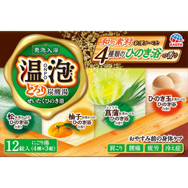
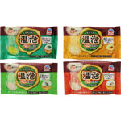

返回列表
产品名称：温泡 とろり炭酸湯ぜいたくひのき浴

アース製薬 温泡 とろり炭酸湯ぜいたくひのき浴 １２錠（医薬部外品）
メーカー アース製薬
JANコード 4901080577412
商品の特徴
和の素材を浮かべた４種類のひのき浴の香りです。
- 成分・分量
- 【有効成分】
炭酸水素Ｎａ、乾燥硫酸Ｎａ、炭酸Ｎａ
【その他成分】
コハク酸、デキストリン、ＰＥＧ６０００、ケイ酸Ｃａ、水解コラーゲン末、ヒアルロン酸Ｎａ－２、ステアロイルフィトスフィンゴシン、シア脂、ローヤルゼリーエキス、エタノール、流動パラフィン、塩化トリメチルアンモニオヒドロキシプロピルヒドロキシエチルセルロース、酸化Ｔｉ、香料、（＋／－）青１、黄４、黄２０２（１）
- 用法及び用量
- 【使用方法】
お風呂のお湯２００Ｌに本品１錠（４５ｇ）を入れ、溶かしきってから入浴してください。
・ 発泡中、まれに咳き込む場合があります。その際は換気をしてください。
・ 炭酸ガスは泡が消えてもお湯に溶け込んでいますので、効果は長続きします。
・ 溶かしてから２時間以内の入浴がより効果的です。
※ アレルギーテスト済み（全ての方にアレルギーが起きないというわけではありません。）
● 袋を開封した後はすぐに使用してください。
● 赤ちゃんと一緒に入浴する時も使えます。
● 入浴剤を溶かしたお湯は洗髪にも使えますが、すすぎは清水を使用してください。